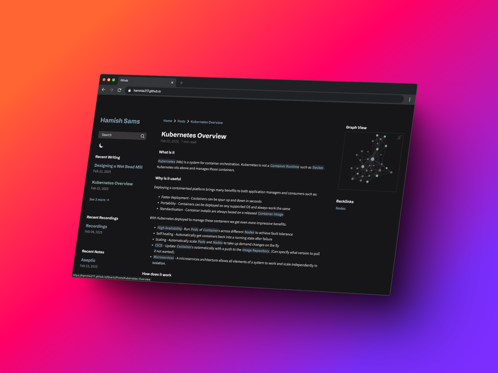

TLDR: Welcome to my New Website! This iteration is designed content first to allow you easy access to all the information you need, no more, no less focusing on Digitalisation/Automation and Pharmaceuticals manufacturing. My current site architecture is to focus on three distinct areas:
- Second Brain Notes - An atomic note network
- Recordings - (Hopefully) A set of videos explaining commonly asked topics in depth
- Posts - A space for more in depth writing about individual projects, events, thoughts etc…

Welcome to my website!
For those that know me and have used my site previously know i’ve made many generations of my website. Usually I re-do my website every other year or so due to some new technology or flash design but this time I wanted to make a platform where I focus on the content and making something useful, so apologies to anyone expecting something new and flashy. Over the last few years and revisions, it’s always been sentimental to me, if not useful, to retain my old site for all, usually me, to go back and see. If you’re looking for my old website or are just interested in the history of the site you can find it Here and even dig all the way back to my first website.
In my newest site I’m trying out a new approach to really focus on the content provided and the platform to allow questions, discussions and a lot of learning.
We’ve all been in the position where we want to delve into a specific topic and either you need to read a 1000 page textbook to get what you need or inversely the content is too dense and expects you to have a full understanding of the field. My intent with this approach is to hopefully make a website that allows you to find exactly what you need and only read what you need to but also make as much information available as possible, to do that I am creating a second brain/ Zettelkasten style website based on the research of Niklas Luhmannwhere I can share my knowledge to anyone willing to listen. If you want to take a look at this try using the search bar to read about a topic or find the landing page here: Second Brain Notes
Beyond the second brain/atomic notes approach, it is sometimes beneficial to do deep dives into thoughts, architectures, processes, projects amongst other things that aren’t quite the micro absolutes that suit that approach. For these more in-depth/structured writings I have created a Posts area that will be constantly updated. Don’t worry though, these posts will link into the Notes to still offer the same clarity and optional depth.
A final section that I am planning to start is the Recordings section, I among other people are very visual with their understanding of topics and can understand things much quicker when they’re not words on a page. As such I commonly discuss topics with people I work with and always see the same questions coming up, in the recordings section I will (hopefully) be curating some quick videos to explain core concepts, technologies and processes.
Once again I want to thank you for coming and taking a look around, please get involved, ask questions, point out mistakes, ask for coverage of a topic and I’ll help where I can. If you don’t want to ask it publicly on the comments feel free to reach out on LinkedIn